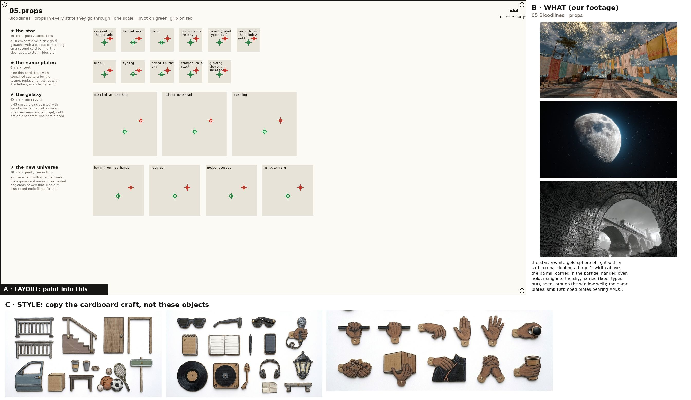
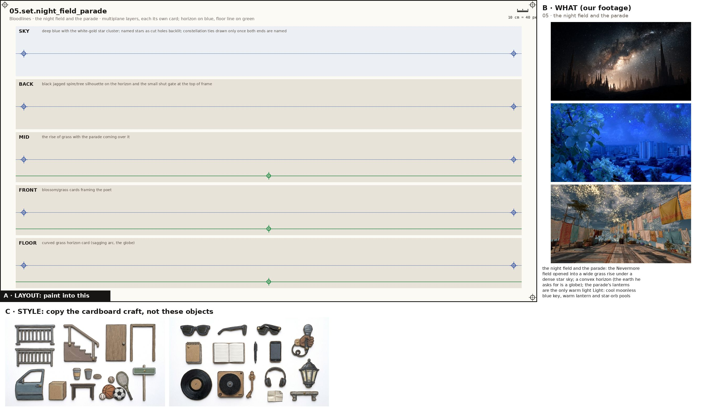
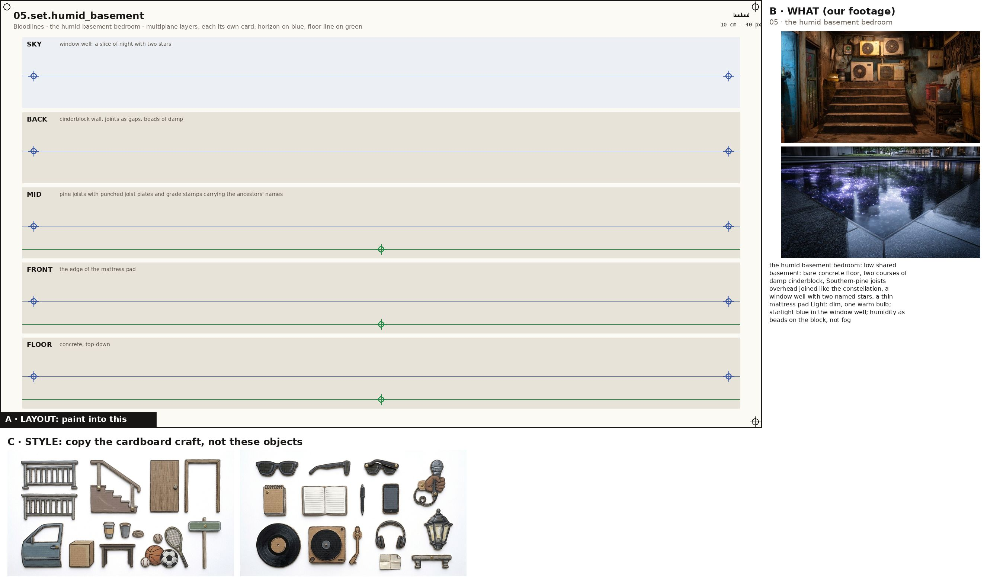
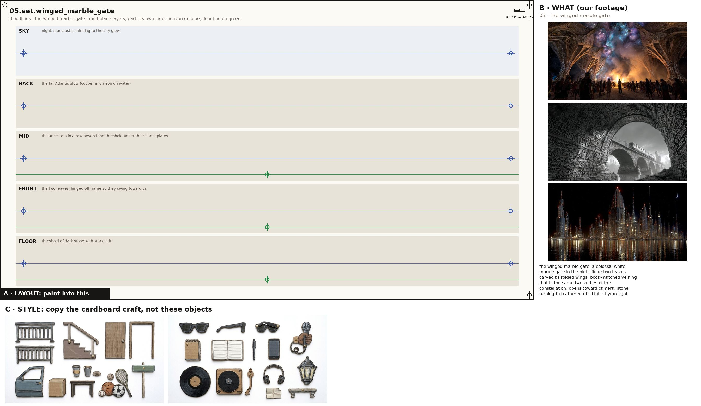
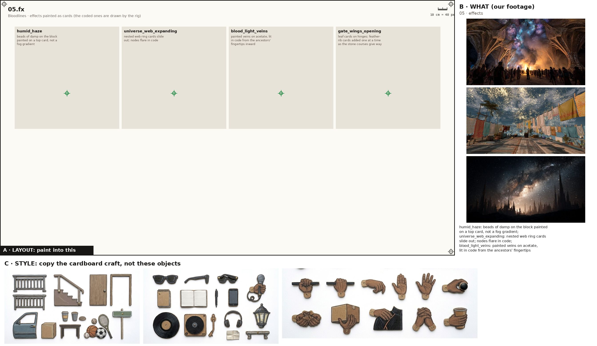

One image + one prompt each. The characters' action sheets are in the cast above; their costume kits are on the character kits page.

Props, every state props
Paint one sheet of cut-out puppet parts for a paper-puppet film, using the attached image. Panel A is the exact layout, panel B is our footage for these props (reference: copy the object, not the photo style), panel C is the style. STYLE (panel C): flat cards cut from corrugated cardboard, gouache with confident ink linework, the flutes faintly showing through the paint, a thin raw kraft-brown cut edge round every card, brass split-pin brads; shot flat-on, even light, no shadows, no perspective. Copy the craft from C, not the clothes in it. WHAT (panel B): the props of the poem 'Bloodlines', one row each, every state of a prop in its own cell, left to right: the star: a white-gold sphere of light with a soft corona, floating a finger's width above the palms (carried in the parade, handed over, held, rising into the sky, named (label types out), seen through the window well); the name plates: small stamped plates bearing AMOS, IDA, OTIS, RUTH, MAE and the rest; the same plate is the grade stamp on the pine joists (blank, typing, named in the sky, stamped on a joist, glowing above an ancestor beyond the gate); the galaxy: a spiral galaxy held in a thin clear disc rimmed with hammered gold (carried at the hip, raised overhead, turning); the new universe: a clear sphere holding a web of light filaments and nodes that unfolds beyond its rim (born from his hands, held up, nodes blessed, miracle ring); the fingerprint: his fingerprint as concentric ridges, glowing with the ancestors' blood-light, outgrowing the frame (dark, veins arriving from the ancestors' fingers, ridges lighting outward, larger than the frame); the lantern staff: tall carved ebony staff with a brass cage at the top holding a small floating star (raised at the head of the parade, grounded); the mattress pad: thin blue tufted pad, stained, straight on concrete; it does not give (empty, under him). Paint each state as a flat cardboard prop card at the size its cell gives, the same object across its row; a brass brad on the green cross (its pivot); where there is a red cross, that is where a hand grips it. LAYOUT (panel A): paint one card inside each grey ghost, in the same place, size and angle, inside its dashed outline; a brass brad exactly on every green cross; each red cross must fall inside that card's rounded end. NEVER draw a pelvis, hip, shorts or briefs card (the thighs end in a rounded seat that tucks under the hem), a sleeveless vest, lace-up boots, or sunglasses painted onto a head. OUTPUT: only the painted cards on a pure white 2048x1152 sheet laid out as panel A. Leave out panels B and C, the crosses, labels, ruler, dashed lines and ghosts.

the night field and the parade set
Paint one sheet of cut-out puppet parts for a paper-puppet film, using the attached image. Panel A is the exact layout, panel B is our footage for this place (reference: copy the place, not the photo style), panel C is the style. STYLE (panel C): flat cards cut from corrugated cardboard, gouache with confident ink linework, the flutes faintly showing through the paint, a thin raw kraft-brown cut edge round every card, brass split-pin brads; shot flat-on, even light, no shadows, no perspective. Copy the craft from C, not the clothes in it. WHAT (panel B): the night field and the parade: the Nevermore field opened into a wide grass rise under a dense star sky; a convex horizon (the earth he asks for is a globe); the parade's lanterns are the only warm light Light: cool moonless blue key, warm lantern and star-orb pools moving with the parade; later dawn-gold raking from one side for 'sun-kissing my skin'. SHEET: the place as five separate flat cardboard layers, one per band, painted to stack front to back in a multiplane rig: SKY: deep blue with the white-gold star cluster; named stars as cut holes backlit; constellation ties drawn only once both ends are named; BACK: black jagged spire/tree silhouette on the horizon and the small shut gate at the top of frame; MID: the rise of grass with the parade coming over it; FRONT: blossom/grass cards framing the poet; FLOOR: curved grass horizon card (sagging arc, the globe). Each layer is its own card with a clean cut top edge and transparent gaps where the layer behind shows through; keep the horizon on the blue line and the floor on the green line in every band so they register. LAYOUT (panel A): paint one card inside each grey ghost, in the same place, size and angle, inside its dashed outline; a brass brad exactly on every green cross; each red cross must fall inside that card's rounded end. OUTPUT: only the painted cards on a pure white 2048x1152 sheet laid out as panel A. Leave out panels B and C, the crosses, labels, ruler, dashed lines and ghosts.

the humid basement bedroom set
Paint one sheet of cut-out puppet parts for a paper-puppet film, using the attached image. Panel A is the exact layout, panel B is our footage for this place (reference: copy the place, not the photo style), panel C is the style. STYLE (panel C): flat cards cut from corrugated cardboard, gouache with confident ink linework, the flutes faintly showing through the paint, a thin raw kraft-brown cut edge round every card, brass split-pin brads; shot flat-on, even light, no shadows, no perspective. Copy the craft from C, not the clothes in it. WHAT (panel B): the humid basement bedroom: low shared basement: bare concrete floor, two courses of damp cinderblock, Southern-pine joists overhead joined like the constellation, a window well with two named stars, a thin mattress pad Light: dim, one warm bulb; starlight blue in the window well; humidity as beads on the block, not fog. SHEET: the place as five separate flat cardboard layers, one per band, painted to stack front to back in a multiplane rig: SKY: window well: a slice of night with two stars; BACK: cinderblock wall, joints as gaps, beads of damp; MID: pine joists with punched joist plates and grade stamps carrying the ancestors' names; FRONT: the edge of the mattress pad; FLOOR: concrete, top-down. Each layer is its own card with a clean cut top edge and transparent gaps where the layer behind shows through; keep the horizon on the blue line and the floor on the green line in every band so they register. LAYOUT (panel A): paint one card inside each grey ghost, in the same place, size and angle, inside its dashed outline; a brass brad exactly on every green cross; each red cross must fall inside that card's rounded end. OUTPUT: only the painted cards on a pure white 2048x1152 sheet laid out as panel A. Leave out panels B and C, the crosses, labels, ruler, dashed lines and ghosts.

the winged marble gate set
Paint one sheet of cut-out puppet parts for a paper-puppet film, using the attached image. Panel A is the exact layout, panel B is our footage for this place (reference: copy the place, not the photo style), panel C is the style. STYLE (panel C): flat cards cut from corrugated cardboard, gouache with confident ink linework, the flutes faintly showing through the paint, a thin raw kraft-brown cut edge round every card, brass split-pin brads; shot flat-on, even light, no shadows, no perspective. Copy the craft from C, not the clothes in it. WHAT (panel B): the winged marble gate: a colossal white marble gate in the night field; two leaves carved as folded wings, book-matched veining that is the same twelve ties of the constellation; opens toward camera, stone turning to feathered ribs Light: hymn-light ripples across the stone as broken rings; the heir-light through the seam; a far neon glow beyond. SHEET: the place as five separate flat cardboard layers, one per band, painted to stack front to back in a multiplane rig: SKY: night, star cluster thinning to the city glow; BACK: the far Atlantis glow (copper and neon on water); MID: the ancestors in a row beyond the threshold under their name plates; FRONT: the two leaves, hinged off frame so they swing toward us; FLOOR: threshold of dark stone with stars in it. Each layer is its own card with a clean cut top edge and transparent gaps where the layer behind shows through; keep the horizon on the blue line and the floor on the green line in every band so they register. LAYOUT (panel A): paint one card inside each grey ghost, in the same place, size and angle, inside its dashed outline; a brass brad exactly on every green cross; each red cross must fall inside that card's rounded end. OUTPUT: only the painted cards on a pure white 2048x1152 sheet laid out as panel A. Leave out panels B and C, the crosses, labels, ruler, dashed lines and ghosts.

Painted effects fx
Paint one sheet of cut-out puppet parts for a paper-puppet film, using the attached image. Panel A is the exact layout, panel B is our footage for the mood, panel C is the style. STYLE (panel C): flat cards cut from corrugated cardboard, gouache with confident ink linework, the flutes faintly showing through the paint, a thin raw kraft-brown cut edge round every card, brass split-pin brads; shot flat-on, even light, no shadows, no perspective. Copy the craft from C, not the clothes in it. WHAT: the poem's painted effects, one per cell, as flat cardboard cards that a cut-out film moves in front of the camera: humid_haze: beads of damp on the block painted on a top card, not a fog gradient; universe_web_expanding: nested web ring cards slide out; nodes flare in code; blood_light_veins: painted veins on acetate, lit in code from the ancestors' fingertips inward; gate_wings_opening: leaf cards on hinges; feather-rib cards added one at a time as the stone courses give way. A brass brad on the green cross of each. LAYOUT (panel A): paint one card inside each grey ghost, in the same place, size and angle, inside its dashed outline; a brass brad exactly on every green cross; each red cross must fall inside that card's rounded end. NEVER draw a pelvis, hip, shorts or briefs card (the thighs end in a rounded seat that tucks under the hem), a sleeveless vest, lace-up boots, or sunglasses painted onto a head. OUTPUT: only the painted cards on a pure white 2048x1152 sheet laid out as panel A. Leave out panels B and C, the crosses, labels, ruler, dashed lines and ghosts.